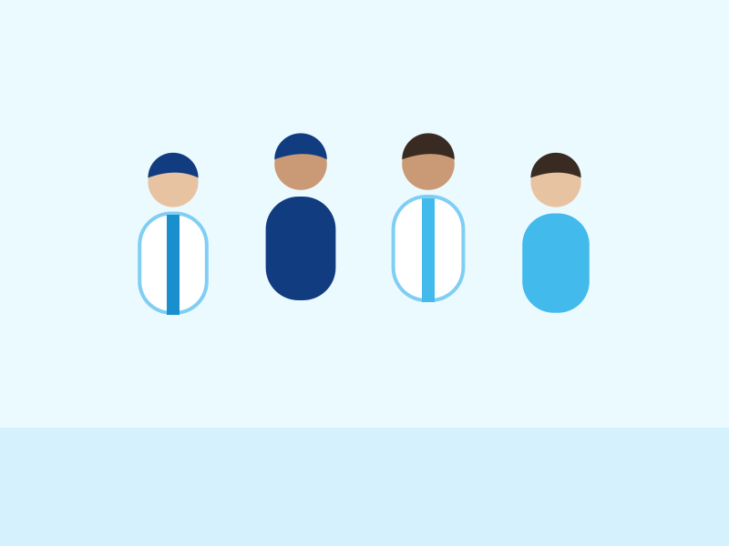

ค้นหาแพทย์และทีมสหวิชาชีพ
ค้นหาจากชื่อ ความเชี่ยวชาญ หรือช่วงวัยที่ต้องการ แล้วกดดูตารางออกตรวจได้ทันที

ไม่พบแพทย์ที่ตรงกับคำค้น ลองคำอื่น หรือโทรสอบถามเราได้
ไม่แน่ใจว่าควรเริ่มที่ไหน
โทรคุยกับเจ้าหน้าที่ 02-032-9595 หรือ 02-725-9595 หรือส่งข้อความถึงเรา เราจะช่วยแนะนำแพทย์และบริการที่เหมาะกับคุณ